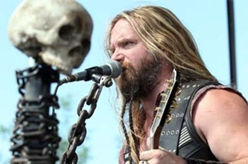

DIA MUNDIAL DO ROCK
Em 13 de julho de 1985, Bob Geldof organizou o Live Aid, um show simultâneo em Londres, na Inglaterra, e na Filadélfia, nos Estados Unidos. O objetivo principal era o fim da fome na Etiópia. O evento chamou a atenção por contar com a presença de muitos artistas famosos na época. Entre os participantes, estavam The Who, Status Quo, Led Zeppelin, Dire Straits, Madonna, Queen, Joan Baez, David Bowie, BB King, Mick Jagger, Sting, Scorpions, U2, Paul McCartney, Phil Collins (que tocou nos dois lugares), Eric Clapton e Black Sabbath. Os shows foram transmitidos ao vivo pela BBC para diversos países e abriram os olhos do mundo para a miséria no continente africano. Em 2005, 20 anos depois do primeiro evento, Bob Geldof organizou o Live 8, uma nova edição com estrutura maior e shows em mais países. Dessa vez o objetivo foi pressionar os líderes do G8 para perdoar a dívida externa dos países mais pobres e erradicar a miséria do mundo. No Live 8 o Grupo de Rock Britânico Pink Floyd se reuniu em sua formação clássica pela primeira vez depois de 20 anos de separação
A banda Queens of the Stone Age se apresenta no Brasil em setembro de 2014. Os shows acontecem em São Paulo e Porto Alegre. No dia 25 de setembro, a banda faz show no Espaço das Américas, em São Paulo, em um show que faz parte da plataforma Live Music Rocks, e dois dias depois, 27 de setembro, o show chega a Porto Alegre, no Pepsi On Stage...
Eddie Vedder no Brasil 2014
O cantor Eddie Vedder vem para o Brasil em maio de 2014 para realizar três apresentações intimistas.
O cantor se apresenta nos dias 06, 07 e 08 de maio no Citibank Hall, em São Paulo, e nos dias 11 e 12 de maio no Citibank Hall,
no Rio de Janeiro. Os shows contam com abertura do artista de folk rock Glen Hansard...

Black Label Society no Brasil 2014
A produtora Liberation MC é a responsável pela tour latino-americana de promoção do novo álbum do BLACK LABEL SOCIETY, "Catacombs Of The Black Vatican". No início de agosto, o BLS passará por 3 capitais brasileiras...


Copywrong by vinikatunaric@gmail.com